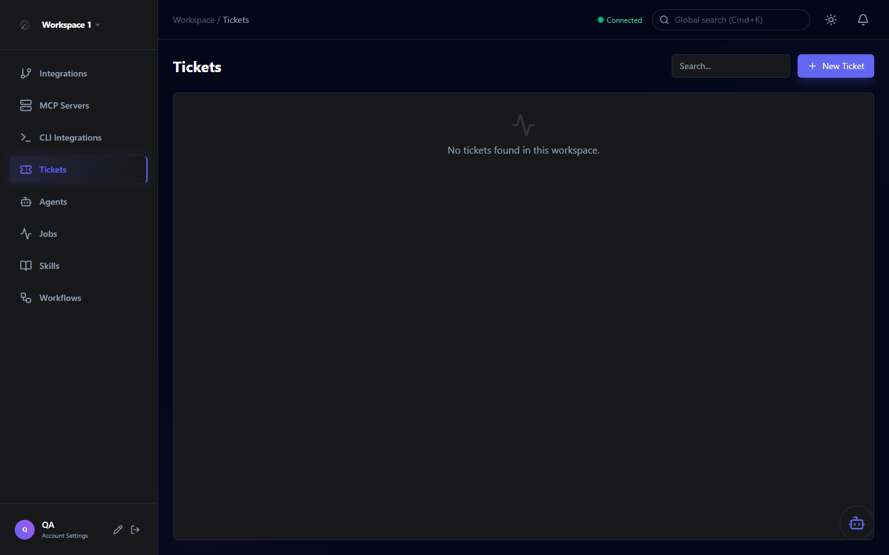

Getting Started
Everything you need to get Orchestra up and running locally — from cloning the repo to creating your first AI-powered workspace.
Prerequisites
Before you start, ensure you have the following installed:
| Tool | Version | Notes |
|---|---|---|
| .NET SDK | 10.0+ | Download from Microsoft ↗ |
| Aspire | Latest | See prerequisites ↗ |
| Docker / Podman | Any recent | Required for PostgreSQL and Redis containers |
| Node.js | v22+ | Required for UI, CopilotKit Runtime, and ADF Generator |
| AI Provider | — | Azure OpenAI resource or a running Ollama instance |
Tip: If you prefer self-hosted models, Ollama is the easiest way to get started without an Azure account. Pull any compatible model and Orchestra will auto-discover it.
Quick Start
Clone the repository and run the distributed application with a single command:
# 1. Clone the repository
git clone https://github.com/arturhaikou/orchestra.git
cd orchestra
# 2. Start the distributed application
aspire runAspire orchestrates all services automatically. Once all services report healthy, open the UI in your browser:
| Service | URL | Description |
|---|---|---|
| React UI | http://localhost:3002 | Main dashboard |
| .NET API | http://localhost:3000 | REST API + SignalR |
| CopilotKit Runtime | http://localhost:3001 | Agentic UI layer |
| ADF Generator | http://localhost:3300 | Atlassian Document Format converter |
| Aspire Dashboard | http://localhost:15888 | Service health & logs |
Note: On first run, Aspire will pull the PostgreSQL and Redis container images. This may take a few minutes depending on your connection speed.
Configuration
AI provider credentials are configured through the application UI — no environment variables are required for provider setup. However, the following fields in src/Orchestra.ApiService/appsettings.json should be set before running in any non-development environment:
{
"Encryption": {
"Key": "<your-encryption-key>"
},
"Jwt": {
"Issuer": "https://api.orchestra.local",
"Audience": "https://api.orchestra.local",
"SecretKey": "<your-jwt-secret>"
}
}Security: Never commit real secrets to version control. Use environment variable substitution or a secrets manager in production deployments.
Creating Your First Workspace
Once the app is running, navigate to http://localhost:3002 and register an account. After logging in, you'll be guided through workspace creation:
Click Sign Up on the login page and create your first user account.
A workspace is your isolated environment — agents, tools, integrations, and skills are scoped per workspace.
Choose between Azure OpenAI (hosted) or Ollama (self-hosted). Enter your credentials in the workspace settings.
Go to Integrations and connect Jira, GitHub, or GitLab to start syncing tickets.
Navigate to Agents, click Deploy Agent, and choose a built-in template or create from scratch.

AI Provider Setup
Hosted model deployments. Requires an Azure subscription with an OpenAI resource and a deployed model (e.g., gpt-4o).
- Endpoint URL
- API Key
- Deployment name
Self-hosted model server. Run locally with any compatible model. Orchestra auto-discovers available models.
# Pull a model
ollama pull llama3.2
# Start Ollama
ollama serveConnect Copilot as the agent execution runtime. Configured via CLI Integrations in the workspace sidebar.
- Automatic model discovery
- Configurable reasoning effort
- Read-only or read/write access levels
Next Steps
Now that Orchestra is running, explore the rest of the documentation: